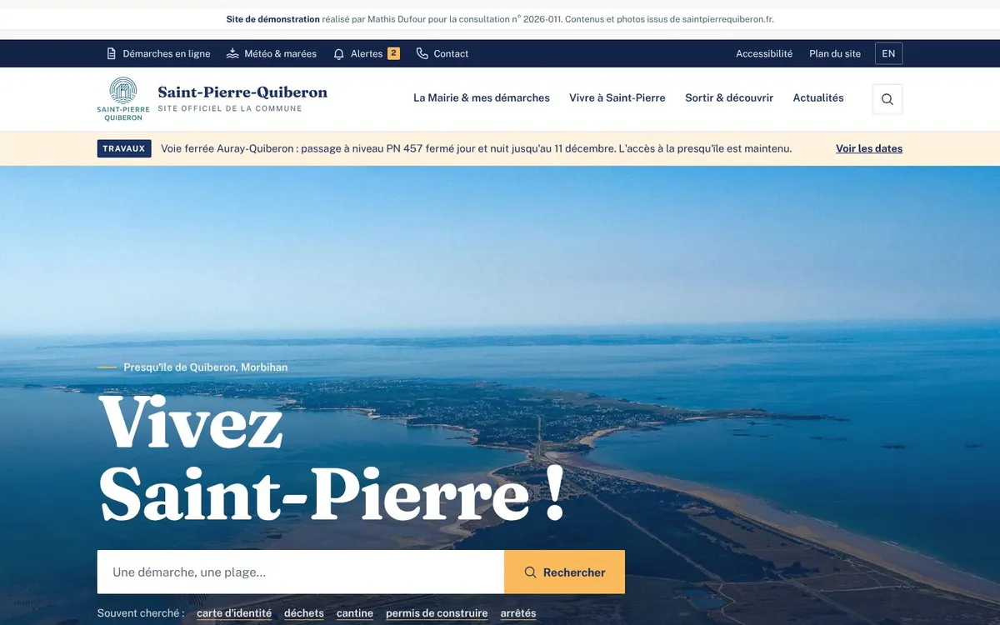
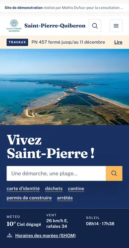
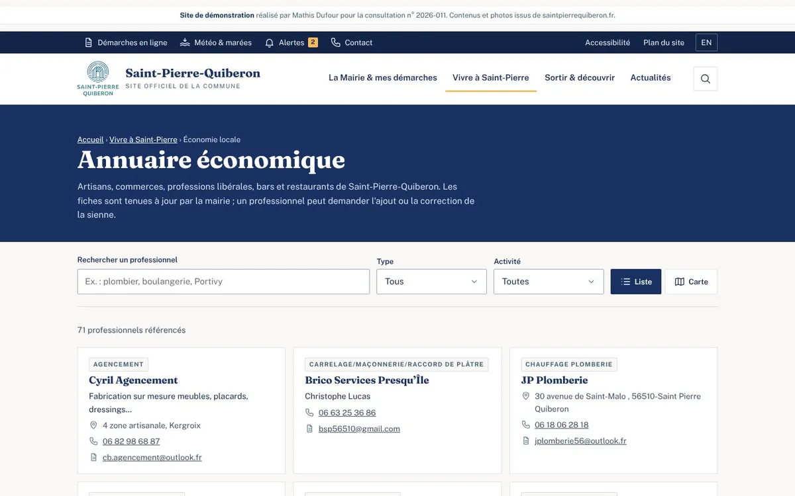
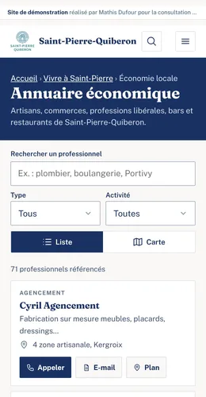
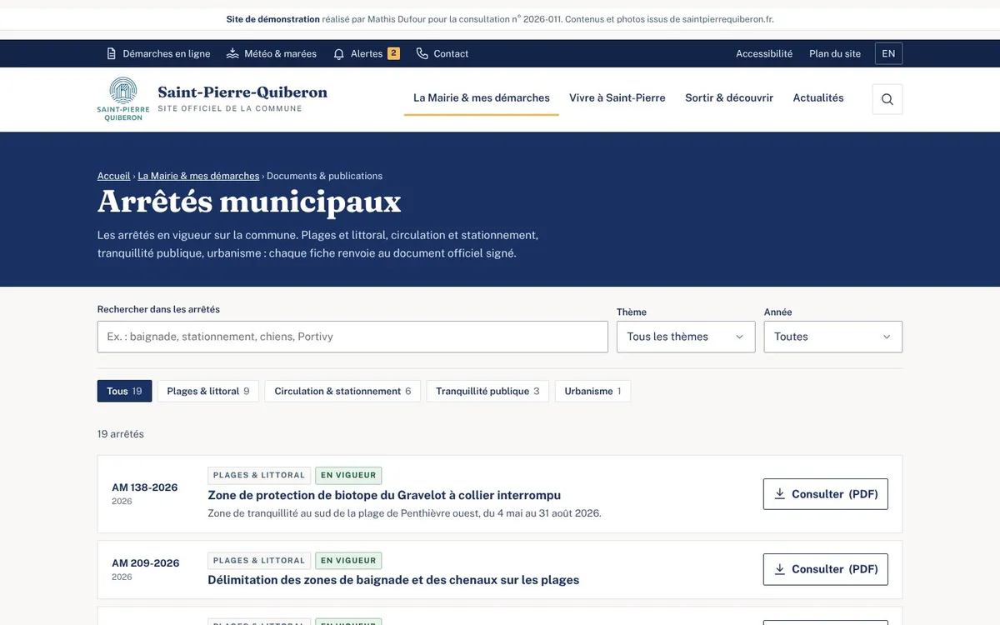
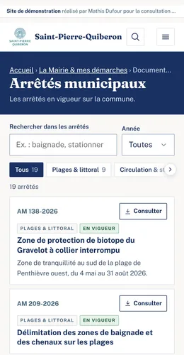

01
Page d'accueil
Recherche dans tout le site, parcours « Vous êtes… », carte des lieux et des zones nautiques, météo du jour.
Ouvrir la page

02
Annuaire économique
Les 71 professionnels de la commune, filtres par type et par activité, vue liste ou carte, appel en un geste sur mobile.
Ouvrir la page

03
Arrêtés municipaux
Les 19 arrêtés en vigueur, classés par thème et par année, recherche dans les textes, lien direct vers l'acte signé.
Ouvrir la pageProposition de Mathis Dufour · mathis@mathisdufour.com · 06 26 35 34 91
Site de démonstration, non référencé. Contenus et photographies : site de la commune de Saint-Pierre-Quiberon.